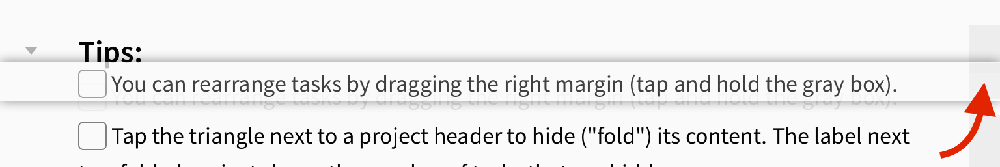

Editorial supports the TaskPaper format for writing todo lists in plain text. The format was invented by Jesse Grosjean for the eponymous TaskPaper app. By default, TaskPaper files have a .taskpaper extension, but you can also edit other files in TaskPaper mode by selecting it as the syntax mode in the Quick Settings (“Aa”) panel.
The TaskPaper “markup” is very simple: To create a task, just start a line with a dash and a following space.:
- This is a task
The dash is automatically converted to a checkbox in Editorial – this doesn’t change the underlying plain text file at all, it is just a convenience for marking tasks as done more quickly.
Tasks can be tagged, using the ‘@’ symbol.:
- Another task @home
It’s generally up to you what you use tags for (if you use them at all) – you might have different tags for contexts, places, people, etc.
The special @done tag is used to mark finished tasks.:
- A finished task @done(2015-02-21)
Tags can contain additional information, in this case the completion date in parentheses, which is added automatically when you use the checkboxes in Editorial.
To insert a project header, simply type a line that ends with a colon (‘:’). Everything that isn’t a task or project header is considered a note.
In Editorial’s settings, you can associate tags with color labels. Some tags, like @due, @flagged, and @today have default colors, but you can easily change this.
If a task has multiple tags that you’ve assigned color labels to, the actual label is determined by the order of the tags on the line. The last tag “wins”. The @done tag has a clear color label by default – marking a task as done adds the @done tag at the end, so it clears all other color labels without needing to remove the colored tags.
By tapping on the triangle next to a project header, you can fold the project, i.e. hide its tasks from view, without deleting anything.
When a project is folded, the number of hidden tasks is shown in a small label next to the header. You can tap this label or the triangle to unfold the project.

When you’re editing TaskPaper documents, you’ll notice that each line contains a gray rectangle in the right margin. You can tap and hold this to move a task up or down. When a project is folded (see above), you can also use this mechanism to move the entire project.
You can also use this method of rearranging lines in other (non-TaskPaper) documents by enabling the “Arrange Paragraphs” options in the quick settings (“Aa”) panel.
Tip
When a project is folded (see above), you can move it together with all its tasks.